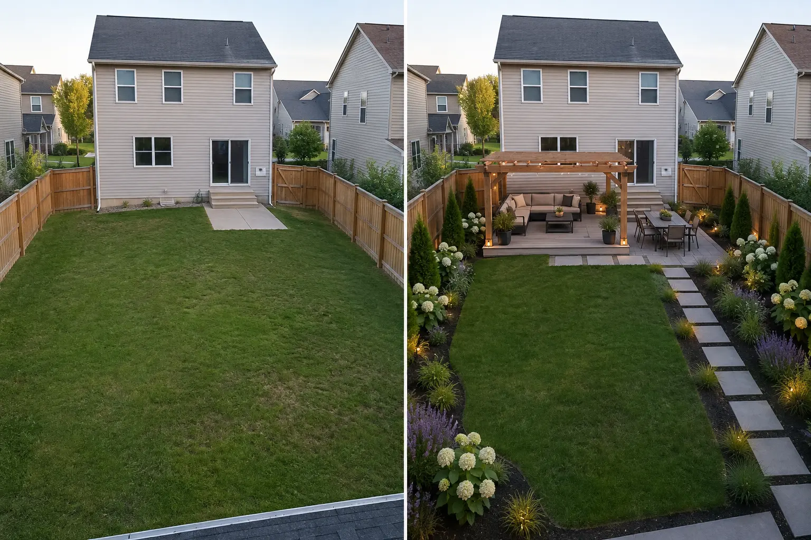
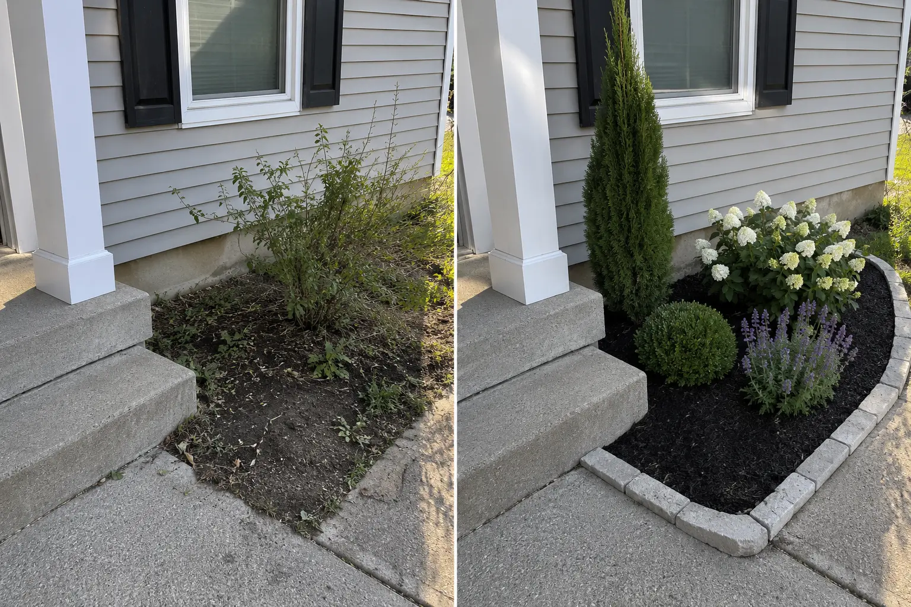
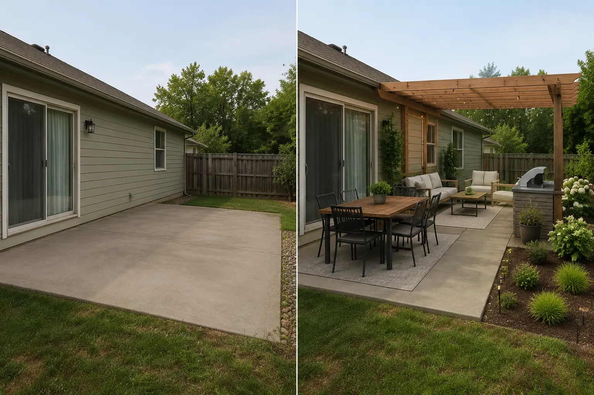
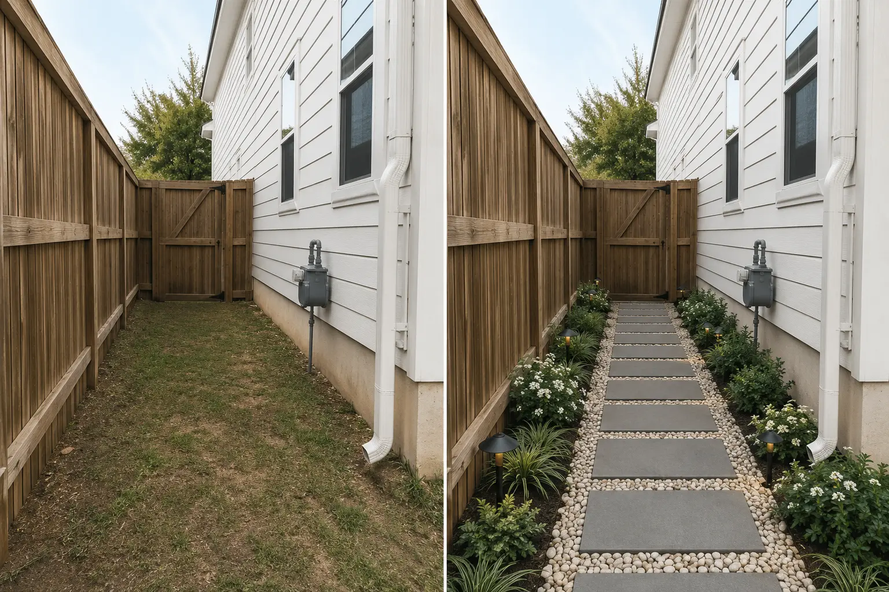

BeforeDigital Design Concept
Project 01 / Front yard
Strengthen the entrance
Layered planting builds hierarchy without covering the windows.
View DirectionBefore-and-concept comparisons reveal the real problem, the design decision and the direction created from each space.
Digital concepts—not completed installations.

Selected from 80+ completed digital design projects.
Layered planting builds hierarchy without covering the windows.
View Direction
Lounge and dining zones are added without sacrificing the lawn.
View Direction
A controlled three-layer structure replaces a crowded collection.
View Direction
Furniture, structure and planting are evaluated before hardscape spending.
View Direction
Repeated materials and plant roles connect different functions.
View Direction
A narrow route gains rhythm without losing access.
View DirectionEvery featured concept is presented with an honest boundary.
Start with fixed architecture, access, scale, light and visible constraints.
Clarify what the area must do before deciding what it should contain.
Use a realistic concept to compare layout, material and planting choices.
Pair the image with plant, material, placement and setup guidance.
The images helped me clearly visualize my front yard, and I’m excited to bring it to life.Keilana / Verified Etsy review
Concept imagery is AI-assisted digital visualization—not a photograph of completed installation. Final physical choices remain subject to local conditions and professional verification where required.
View Verified Etsy ReviewsShare clear photos and priorities so the correct scope can be confirmed before Etsy checkout.